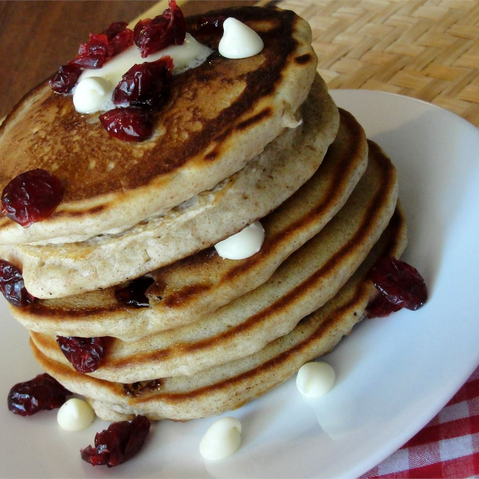

home
buttermilk biscuits
Mornings, Popular, Vegan Food
Tasty Vegan Buttermilk Pancakes 🥞
DECEMBER 22, 2021 • 100 COMMENTS

DESCRIPTION
These pancakes use minimal ingredients that you can find at any store, and with a little practice it is easy to get the
hang of nailing the perfect pancakes every time.
INGREDIENTS
- 1 cup Almond Breeze Original Almondmilk
- 1 tsp apple cider vinegar
- 1 cup all-purpose flour
- 2 tsp baking powder
- 2 tbsp sugar
- pinch of salt
- 1 tbsp oil
INSTRUCTIONS
- Combine the Almond Breeze Original Almondmilk and apple cider vinegar, stirring well. Set aside.
- In a mixing bowl, whisk together flour, baking powder, sugar and salt.
- Add the oil to the almondmilk mixture and stir. Then pour into dry mixture.
- Mix until JUST combined. Lumps are okay! Do not over-mix. See video for what the batter should look like.
- Heat a frying pan to medium heat. Spray oil lightly onto pan.
- Using scoop batter into round pancake shapes, leaving some room for spreading. I usually do 2 at a time. BE PATIENT! Let
it cook until bubbles rise to the surface then burst, and the edges start to look cooked. Take a peak underneath and if
it is golden, flip to the other side. Cook about 30 seconds-1 minute on the other side (the second side takes much less
time to cook).